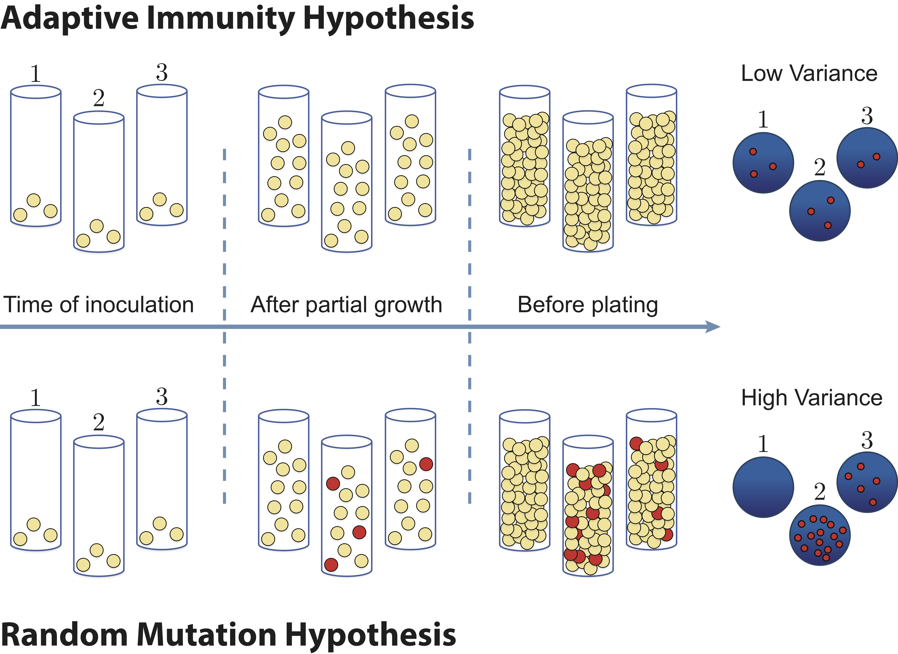

import numpy as npimport numbaimport iqplotimport bokeh.ioimport bokeh.plottingbokeh.io.output_notebook()
Loading BokehJS ...
22.1 Simulating data generation
We have seen that we can draw random numbers out of distributions for which we have a convenient transform or access to a quantile function. We have also seen that we can derive a probability mass function or probability density function from the story of a distribution, and those PMFs/PDFs give us complete information about the distribution. Sometimes, though, it is difficult or impossible to derive a PMF or PDF from a story. In other situations, we may know the PMF or PDF buy cannot derive a transform nor an easily evaluated quantile function. In these cases, we can simulate the story of the distribution using random number generation.
In this section, as an example, we will learn how to simulate the Luria-Delbrück distribution.
The Luria-Delbrück distribution (also known as a jackpot distribution) is a classic example from the biological sciences of a distribution whose story is easy to state, but whose PMF is very difficult to write down. (It was written down by Lea and Colson, but the expression fills a couple pages and is not terribly usable.)
When mutations occur in nature, they are often deleterious to the organism. However, mutations are a critical part of the genetic heritage of living organisms, arising in every type of organism and allowing life to evolve and adapt to new environments. In 1943, the question of how microorganisms acquire mutations was described in a famous paper by Salvador Luria and Max Delbrück (S. E. Luria and M. Delbrück, Genetics, 28, 491–511, 1943). At the time, there were two prominent theories of genetic inheritance, the “random mutation hypothesis,” in which mutations arose randomly in the absence of an environmental cue, and the “adaptive immunity hypothesis, in which mutations occur as an adaptive response to an environmental stimulus. See the figure below.

Figure 22.1: Luria and Delbrück assessed two competing hypotheses for the role genetic mutations play in evolution by natural selection.
To test these two hypotheses, Luria and Delbrück grew many parallel cultures of bacteria and then plated each culture on agar containing phages (which infect and kill nearly all of the bacteria). Although most bacteria are unable to survive in the presence of phages, often mutations could enable a few survivors to give rise to resistant mutant colonies. If the adaptive immunity hypothesis is correct, mutations occur only after bacteria come in contact with phages, thus only after plating the bacteria on phage-agar plates. Under the random mutation hypothesis, some bacteria already have the immunity before being exposed.
The story of the Luria-Delbrück distribution arises from the random mutation hypothesis. Start with a single cell that cannot survive being exposed to phage. When it divides, there is a probability \(\theta\) one of the daughter cells gets a mutation that will impart survivability. This is true for each division. Once a mutation that imparts survival is obtained, it is passed to all subsequent generations. The number \(n\) of survivors in \(N\) individual cells exposed to the stress is distributed according to the Luria-Delbrück distribution.
We will not attempt to write down the PMF, but will instead sample out of the Luria-Delbrück distribution by directly simulating its story. To do the simulation, we note that if we have a population of \(M\) unmutated cells, we will have \(M\) cell divisions. The number of cell divisions that result in a mutation is Binomially distributed, Binom(M, θ). So, to simulate the a Luria-Delbrück experiment, at each round of cell division, we draw a random number of a Binomial distribution parametrized by the number of cells that have not yet had mutations and \(\theta\). For after the \(g\)th set of cell divisions, we have \(2^g\) total cells. If we have \(n_\mathrm{mut}\) cells with favorable mutations when we had \(2^{g-1}\) cells, then we have \(2 n_\mathrm{mut} + n_\mathrm{mut}^\mathrm{new}\), where \(n_\mathrm{mut}^\mathrm{new}\) is drawn from \(\text{Binom}(2^{g-1}-n_\mathrm{mut}, \theta)\), after the \(g\)th set of cell divisions. Let’s code it up!
@numba.njitdef draw_random_mutation(n_gen, theta):"""Draw a sample out of the Luria-Delbruck distribution Parameters ---------- n_gen : int Number of generations. At the end of the experiment, there are `2**n_gen` cells. theta : float Probability of obtaining a mutation in a single cell division. Returns ------- output : int Number of cells that will survive stress. """# Initialize number of mutants n_mut =0for g inrange(n_gen +1): n_mut =2* n_mut + np.random.binomial(2**(g-1) -2* n_mut, theta)return n_mut
This function draws a single number of survivors. To get a picture of the distribution, we need to make many, many draws, so we write a function to call this function repeatedly to get the samples.
@numba.njitdef sample_random_mutation(n_gen, theta, n_samples=1):"""Sample out of the Luria-Delbruck distribution Parameters ---------- n_gen : int Number of generations. At the end of the experiment, there are `2**n_gen` cells. theta : float Probability of obtaining a mutation in a single cell division. n_samples : int Number of samples to draw Returns ------- output : Numpy array of ints Draws of number of cells that will survive stress. """# Initialize samples samples = np.empty(n_samples)# Draw the samplesfor i inrange(n_samples): samples[i] = draw_random_mutation(n_gen, theta)return samples
Let’s put it to use! We will draw a million samples for 16 generations with a mutation rate of \(10^{-5}\).
Luria and Delbrück knew that if the Fano factor, the ratio of the variance to the mean, was much bigger than one, the adaptive immunity hypothesis (which has a predicted Fano factor of 1—can you explain why?). We can compute the Fano factor of the Luria-Delbrück distribution from the samples.
Wow! Huge variance and bit Fano factor. We can get a feeling for the PMF by making a spike plot (We will avoid an ECDF in this case because we have LOTS of samples and we want to take it easy on the browser.)
# Print probability of getting zeroprint(f"Fraction with zero survivors: {np.sum(samples==0) /len(samples)}")bokeh.io.show( iqplot.spike( samples, fraction=True, x_range=[0.5, 2e5], y_range=[1/len(samples), 1], x_axis_type='log', y_axis_type='log', x_axis_label='number of survivors', ))
Fraction with zero survivors: 0.519538
We have a very heavy tail, which decays according to a power law. We also see artifacts due to the discrete nature of the cell divisions, where powers of two are more likely. Using just the powers of two, the apparent power law is approximately \(P(n) \sim n^{-1}\), which is not even normalizable in the limit of an infinite number of plated cells. The fact that we have a finite number of cells keeps the PMF normalizable. A very heavy tail, indeed!